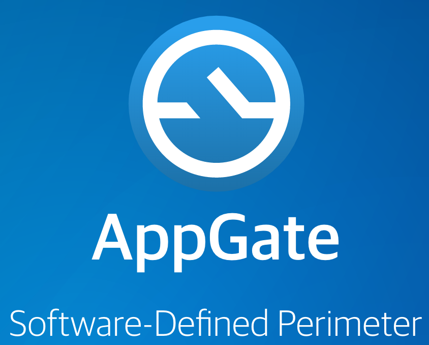
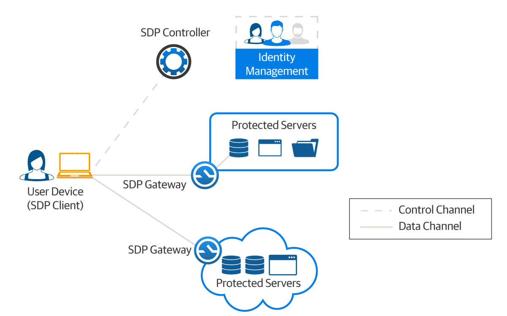
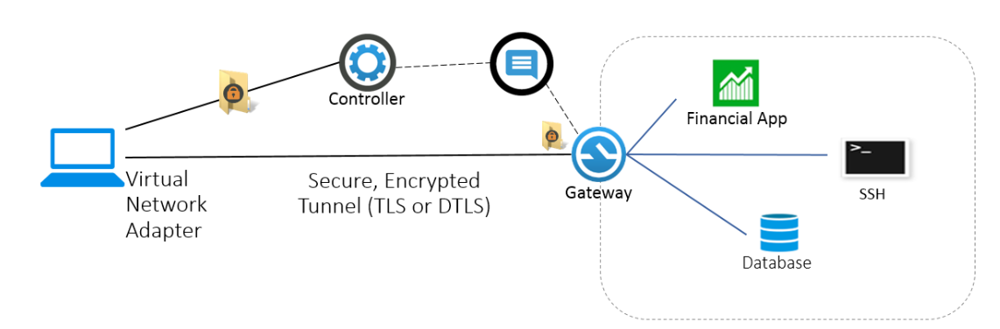

AppGate (Application Gateway) is a VPN/network access control solution. It provides granular access to applications and services through a secure VPN connection. I have personally worked on all aspects of the project, from recruitment to design and architectural decisions to the development of all parts. Development and release of first 3 versions took over 4 years, after which, the company was acquired and joined the billion dollar club! I will start with the interesting bits and jump directly to the tech stack, followed by the architectural overview.
Server side was developed as micro-services after consulting with expert opinions and our consensus. Management Console is forked from my open source project KOAN. Same goes for Android and iOS clients, which I forked from my existing WebView based projects. You can check out the Android client yourself:
I can only mention publicly available info. If you are interested, you can check out the product page down below.
AppGate is a VPN solution hence its primary purpose is to securely provide access to resources. Obviously resources like web services can be hosted on multiple locations; in house, up in the cloud, in a data center, etc. Each service location needs to have a gateway deployed so AppGate clients can establish VPN connection to these gateways and provide users access to resources. We also need a central "controller" to orchestrate all gateways and clients. Following diagram nicely summarizes this architecture:
AppGate clients create a virtual network adapter per connected gateway to establish the VPN. Once the user authenticates towards a central controller cluster, client automatically established connection to gateways according to resources being accessed. Each gateway is an Ubuntu based virtual machine that can be hosted just about anywhere. System configuration is facilitated by the first run wizard and a simple management console. Following diagram demonstrates a typical client-gateway-controller communication:
I won't go into further detail about the architectural choices and system design due to this being a security product. However following presentation by AppGate team is publicly available and elaborates on points that I mentioned in this article. On a final note, AppGate is also termed as a "Software Defined Perimeter" product, and idea elaborated in the presentation.